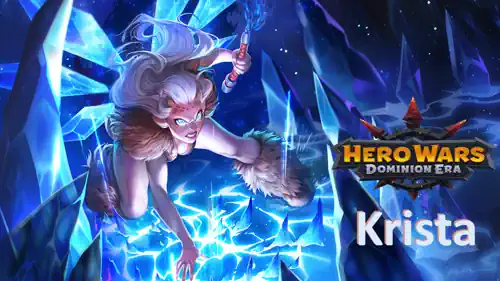
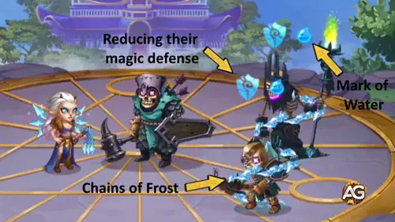
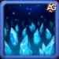
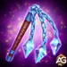

The long-awaited Krista rework has arrived in Hero Wars: Dominion Era, transforming her from a solid mage into a true game-changer. With revamped abilities, fresh Ascension Skills, and enhanced synergy with Marks of Water, Krista is now deadlier than ever — both on her own and when paired with Lars, Cascade
, and other heroes.
In this guide, we’ll explore Krista’s new kit, her lore, and her best synergies, while breaking down how the rework reshapes her role in the current meta. If you’re curious whether Krista deserves a spot in your main team, keep reading — the answer may surprise you!

Krista Guide - Hero Wars: Dominion Era, a game developed by Nexters.
Who Is Krista?
Krista is a powerful mage who fights on the middle line, relying on her intelligence and ice magic. Her tragic past and strong bond with her twin brother Lars shaped her into one of Dominion’s most loyal and dangerous heroes.
Class: Mage
Position: Middle line
Main Stat: Intelligence
Marks of Water, once considered negative effects, are now unstoppable — they can’t be blocked or cleansed by Sebastian, Nebula, or similar heroes. This makes Krista’s abilities far more reliable and impactful in every battle.
With her rework, Krista gains not only improved damage and utility, but also the ability to elevate entire water-mark based teams. Heroes like Lars and Cascade
are benefit immensely, making Krista a cornerstone for competitive play.
Krista Pros and Cons – Hero Wars: Web and Facebook
✅ Pros
Strong synergy with Marks of Water, boosting damage for herself and allies like Lars and Cascade.
High magic damage output thanks to Icy Vengeance and Frozen Needles.
Crystallization provides a protective shield, adding survivability in burst-heavy fights.
Ascension Skills enhance both damage and utility, making her more effective in team battles.
Reliable against enemies who cannot cleanse or block Marks of Water effects.
❌ Cons
Relies on Intelligence stat and magic damage, making her vulnerable to magic shields and magic-absorbing counters.
Marks of Water strategy depends on ally coordination for maximum effectiveness.
Ascension Skills take time to unlock, delaying her full potential for new or beginner players.
Less effective against heroes with high magic resistance or energy disruption.
Squishy in early stages if not paired with protective allies or pets.
Krista Skills Upgrade Priority - Hero Wars: Dominion Era
Learn which Krista skills to level first in Hero Wars: Dominion Era. Simple explanations, damage formulas, and upgrade priorities included.
Icy Vengeance
Krista launches 5 ice crystals that hit enemies one by one, dealing area damage. This is her main source of consistent damage and activates often during fights.
Formula: (584 + 35% Magic Attack + Level × 100)
Evolution Priority:Very High – This is Krista’s strongest and most reliable damage skill. Upgrading it first maximizes her team impact in every battle.
Krista strikes the center of the enemy team, reducing their magic defense and applying a Mark of Water. This sets up extra damage from her and other Water Mark heroes.
Formula: (10% Magic Attack + Level × 20)
Ascension skill: Generous Water Marks – Allies heal for 50% of the magic damage dealt to enemies with a Water Mark. This makes Krista an amazing support-damage hybrid.
Evolution Priority:High – Important for boosting your whole team’s damage and healing at Ascension. Level this after her first skill.

Skill - Chains of Frost, Hero Wars Dominion Era.

Frozen Needles
Krista freezes the ground, creating ice thorns that hurt enemies when they move. Once the ice melts, all standing enemies receive a Water Mark. This skill is situational but very useful in longer battles.
Formula: (12% Magic Attack + Level × 25 + 500)
Evolution Priority:Medium-High – It deals good damage and spreads Marks of Water, but it’s less reliable than her first two skills.
When Krista is about to take heavy damage, she protects herself with an ice block that absorbs 50% of the incoming damage for 2 seconds. It’s a defensive survival tool, not a damage source.
Ascension skill: Volatile Crystallization – After the shield ends, the block explodes, dealing (40% Magic Attack + 1500) damage to nearby enemies. This adds offensive value later in the game.
Evolution Priority:Medium – Early on, this skill is only defensive. It becomes better with Ascension, but still less important than her main offensive skills.
Skill - Crystallization, Hero Wars Dominion Era.
Best Patronage for Krista
Discover the best pets for Krista in Hero Wars: Dominion Era. Patronage boosts and battle benefits explained from top priority to least useful.
Merlin is the perfect pet for Krista, as he boosts Magic Attack and Magic Penetration while also making her skills cast faster through his Tempus Magica! skill. This directly improves the damage of Krista’s Icy Vengeance and her Mark of Water combos, making her more deadly in both offense and synergy with Lars and Cascade.
Axel is the second-best option, giving Krista survivability with his Defensive Blub! patronage. This makes her much harder to burst down, especially since Krista often stays on the field long enough to spread multiple Marks of Water. Axel is ideal for defensive setups or if your team already has high damage output.
Khorus grants Krista and other Intelligence heroes a Resilience Aura, converting part of their magic damage into a shield. While useful for longer battles and to reduce physical damage intake, it is less impactful for Krista compared to Merlin’s offensive boost or Axel’s strong protection.
Biscuit reduces enemy healing, which can be situationally useful against healer-heavy teams. However, it does not directly amplify Krista’s core strengths (damage and synergy with Marks of Water). For this reason, Biscuit is considered the least effective choice among the four for Krista’s patronage.
Best Skin for Krista Hero Wars: Dominion Era
Krista’s skins directly impact her performance by boosting her magic damage, penetration, and survivability. Offensive skins bring the best value to her role, while defensive ones provide situational support.
Default Skin
Stats gain: Intelligence +1,365
- Magic attack from Intelligence: +4,095
- Magic defense from Intelligence: +1,365
- Physical attack from Intelligence: +1,365
Evolution Priority:Low Priority – Provides base stats but less impactful compared to specialized skins.
Total of Intelligence Skin Stone for max level:
30,825
Masquerade Skin
Stats gain: Magic Attack +10,650
Evolution Priority:High Priority – Core damage boost, Krista’s most important offensive skin.
Total of Intelligence Skin Stone for max level:
55,410
Krista Artifact Evolution Priority Hero Wars: Dominion Era
Krista’s artifacts are essential to maximize her team impact. Focus first on boosting her ultimate synergy and team damage, then add survivability and base stats for balanced progression.

Weapon Artifact: Permafrost Flail
Magic Attack: +50,190
Evolution Priority:Very High – This artifact boosts the entire team’s Magic Attack when Krista casts her ultimate. Since her rework revolves around damage through Marks of Water, evolving this first maximizes both Krista’s and her allies’ effectiveness in battle.
Book Artifact: Tome of Arcane Knowledge
Stats gain: Health +83,649 / Magic Attack +16,731
Evolution Priority:High – Provides a balance between survivability and Magic Attack. This makes Krista less fragile against burst damage while still increasing her spell power. Important, but secondary compared to the team-wide bonus of her weapon artifact.
Ring Artifact
Stats gain: Intelligence +6,249
- Magic Attack from Intelligence: +18,747
- Magic Defense from Intelligence: +6,249
- Physical Attack from Intelligence: +6,249
Evolution Priority:Medium – Adds consistent base stats and improves her damage output, but it only benefits Krista herself. While useful, it should be the last focus after her team-impacting artifacts are upgraded.
Krista Glyph Evolution Priority
Krista’s glyphs significantly enhance her performance by amplifying her damage output and durability. Focus first on offensive power to maximize her Marks of Water synergy, then invest in survivability and secondary stats for balance.
1st Glyph - Magic Attack:
Magic Attack: +6,500
Evolution Priority:Very High – This is Krista’s most impactful glyph. Boosting Magic Attack directly increases the damage of her skills and improves the effectiveness of the Marks of Water, making it her top priority.
2nd Glyph - Health:
Health: +62,200
Evolution Priority:High – Increasing Krista’s survivability ensures she can stay alive long enough to cast multiple skills and ultimates. This glyph is crucial against burst and physical-heavy teams.
3rd Glyph - Armor:
Armor: +6,500
Evolution Priority:Medium – Helps mitigate incoming physical damage. Useful, but situational compared to Health since it does not protect against magic-heavy compositions.
4th Glyph - Magic Defense:
Magic Defense: +6,500
Evolution Priority:Medium – Provides extra protection against magic attackers. While helpful, Krista usually pairs with Lars and other mages, meaning her enemies are often countered in other ways. Still worth upgrading over time.
5th Glyph - Intelligence:
Stats gain: Intelligence +1,135
- Magic Attack from Intelligence: +3,405
- Magic Defense from Intelligence: +1,135
- Physical Attack from Intelligence: +1,135
Evolution Priority:Low – While Intelligence boosts multiple stats, its overall impact is less direct compared to raw Magic Attack or survivability glyphs. Upgrade this last, after her main offensive and defensive glyphs are developed.
Best Allies and Synergies for Krista – Hero Wars: Dominion Era
Krista synergizes best with heroes that amplify Marks of Water effects. These allies enhance her damage output and crowd control, making team compositions more deadly.
Skill: Refluence
When returning during Tidal Wave, Cascade applies the Water Mark effect to enemies for 5 seconds. Whenever a marked enemy takes magic damage, they suffer an additional damage. This increases Krista’s synergy by enhancing damage on marked enemies.
Lars
Skill: Conductance
All of Lars' attacks against enemies with a Water Mark deal extra damage and increase stun duration. This directly enhances Krista’s Marks of Water strategy, making them a highly synergistic pair in team battles.
How to Counter Krista – Hero Wars: Dominion Era
These heroes can counter Krista effectively by reducing her damage, blocking her spells, or limiting her Marks of Water synergy in battle. Understanding their skills helps you build a strategy against her.
Skill: Art of Deceit
Amira grants a wish to enemies with Intelligence as their main stat, boosting the healing they receive by 10% for 7 seconds. She also damages them and reduces their Magic Attack while the wish is active, and the Magic Attack decrease lasts 7 more seconds after it expires. This reduces Krista’s damage output and counters her healing synergy.
Cornelius
Skill: Heavy Wisdom
Cornelius hits the enemy with the highest Intelligence using a monolith, dealing damage proportional to their Intelligence. Since Krista’s main stat is Intelligence, this counter targets her directly and reduces her survivability.
Skill: MP-300 Capacitor
Isaac’s Magic Power Capacitor absorbs a portion of magic damage taken by him and his allies, transforming it into Charge. This reduces the effectiveness of Krista’s magic damage and limits her ability to apply Marks of Water efficiently.
Jorgen
Skill: Torment of Powerlessness
Jorgen summons a Skull to the enemy’s front line, dealing magic damage and preventing affected enemies from gaining energy for 9 seconds. This delays Krista’s skill usage and reduces her overall damage output in prolonged fights.
Skill: Rakashi's Barrier
Rufus covers his team with a shield that absorbs all magic damage. This effectively nullifies Krista’s magic attacks and reduces her ability to influence the battle with her Marks of Water.
Krista Best War Flags – Hero Wars
Choosing the right War Flags enhances Krista’s magic damage and Marks of Water synergy, maximizing her effectiveness in team battles from the middle line.
War Flag of Frost:
Every 18 seconds, Frost is cast on enemies, reducing their skill levels by 2 for 8 seconds.
Krista and Team Benefit: Reduces enemy skill levels, limiting counterplay against Krista’s magic attacks and Marks of Water. This makes it easier for Krista and her allies to land spells consistently.
War Flag of Decline:
Decreases enemy team’s healing by 10%.
Krista and Team Benefit: Reduces the effectiveness of enemy healers, increasing the impact of Krista’s magic damage and Marks of Water. Excellent for offensive mid-line compositions.
War Flag of Recovery:
Increases all healing by 10%.
Krista and Team Benefit: Useful if Krista is paired with self-sustaining allies or pets that rely on healing. Helps her survive longer in prolonged battles, though less critical than Frost or Decline.
Best Teams for Krista Hero Wars: Dominion Era
Top Defense Teams for Krista
#
Table: Best Defense Teams for Krista
Aurora, Krista, Celeste, Sebastian, Lars, Axel
Krista, Jorgen, Folio, Lars, Lian, Khorus
Astaroth, Krista, Jorgen, Lars, Lian, Khorus
Astaroth, Krista, Jorgen, Lars, Martha, Khorus
Aurora, Krista, Jorgen, Lars, Thea, Khorus
Top Attack Teams for Krista
#
Table: Best Attack Teams for Krista
Axel, Lars Sebastian, Celeste, Krista, Aurora
Khorus, Lian, Lars, Folio, Jorgen, Krista
Khorus, Lian, Lars, Jorgen, Krista, Astaroth
Khorus, Martha, Lars, Jorgen, Krista, Astaroth
Khorus, Thea, Lars, Jorgen, Krista, Aurora
Conclusion – Krista Guide Hero Wars: Dominion Era
Krista’s rework has transformed her into a formidable mid-line mage, capable of controlling the battlefield with Marks of Water and devastating magic attacks. Her synergy with heroes like Lars and Cascade makes her a cornerstone in offensive compositions, while her Ascension Skills and prioritized artifacts, glyphs, and skins ensure she remains highly effective throughout all stages of the game.
To maximize Krista’s potential, focus on upgrading her core offensive abilities first, equip her with the right pets, War Flags, and skins, and pair her with allies that amplify her Marks of Water. Proper positioning and team synergy are key to unlocking her full damage potential and making her a true game-changer in both PvE and PvP battles.
With careful planning, Krista can dominate mid-line fights, disrupt enemy strategies, and turn the tide of any battle in your favor. Whether you play on Web or Facebook, she’s a hero worth investing in for long-term success in Hero Wars: Dominion Era.
About the Author
Alexandre Domingos holds a postgraduate degree in Engineering and works as a Production Supervisor. In his spare time, he explores the gaming world as a YouTuber and blogger at Alexandre Games, combining his passion for technology and strategy. He has been immersed in gaming since the age of 5, starting on classic platforms like MSX, Master System, Nintendo, and even an old 286 PC. Since 2019, Alexandre has also been playing Hero Wars and Mobile Legends, among other mobile games, creating guides, tutorials, and analyses for the community.
Did you like our Krista Guide for Hero Wars Web and Facebook? Is there something you didn't understand or would like to suggest changes to? We invite you to join our comment section on the Alexandre Games Blog page. Feel free to express your opinion, clarify your doubts, and share your suggestions. Click the button below to get started:


 30,825
30,825